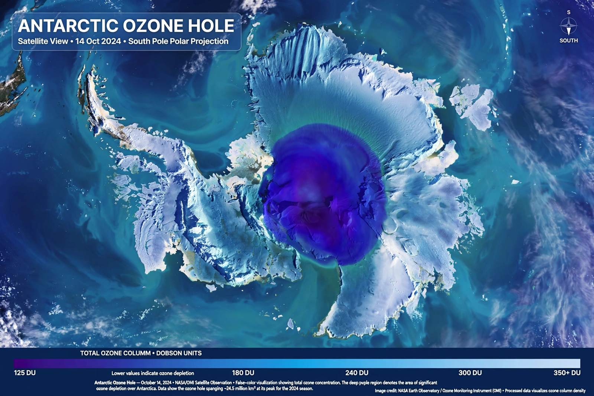

Ozone layer
From Wikipedia, the free encyclopedia

The ozone layer is a region of Earth's Stratosphere containing a high concentration of Ozone (O₃), roughly 15–35 km above the surface, which absorbs most of the Sun's harmful ultraviolet radiation. Its depletion by human-made Chlorofluorocarbons — revealed by the Antarctic 'ozone hole' reported in 1985 — prompted the Montreal Protocol (1987), the most successful environmental treaty in history, under which the layer is healing and expected to recover to 1980 values around mid-century.
Chemistry and discovery
Stratospheric ozone forms and breaks down in the Chapman cycle of UV photolysis; a molecule-thin shield (the whole layer, compressed, would be some 3 mm thick, measured in Dobson units) that absorbs UV-B and UV-C. Ground-based Dobson spectrometers monitored it from the 1920s (Arosa) and at Halley Bay since 1957 — the archive that let Farman, Gardiner and Shanklin demonstrate the springtime Antarctic collapse.
Depletion and recovery
CFCs — inert in the troposphere — release chlorine in the stratosphere that catalytically destroys ozone, supercharged over polar stratospheric clouds (Rowland and Molina's theory, 1974; chemistry Nobel 1995). The Montreal Protocol's phase-outs (aided by substitutes, though HFCs then needed their own Kigali Amendment) cut emissions ~99%; the 2023 UN assessment projects recovery by about 2040 globally, 2045 for the Arctic and 2066 for Antarctica.